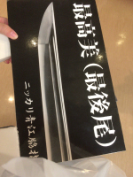

Profile
大瀬美貴
ゲームをする事とYouTubeを見る事が好きです。 舞台を見にいくのも好きです。
ゲームはスマホゲームが主です。後、ホラゲも好きですが見る専門です。
好きなホラゲは「BIOHAZARD７」「LITTLE NIGHTMARES」「夜廻」「影廊」。Youtuberのガッチマンさんの実況でよく見ます。
スマホゲームは主に刀剣乱舞をします。その影響で刀剣展示や神社にもよく行きます。実際展示で見た中で好きな刀は銘 吉行。坂本龍馬の愛刀です。
この間は香川県までニッカリ青江を見に行きました！！ずっと見たかった刀で復元刀の展示もしてあって最高でした！！
刀剣乱舞はPCでもできるので是非！

舞台は刀剣乱舞のミュージカルをよく見ますが、最近は「TRUMP」というシリーズにハマっています。
脚本が複雑で世界観もとても良くてなかなかに悲劇的な話です。大体登場人物の半分以上が死にます。
一先ず一番好きな(まだ２作品しか見たことない)４作品目の「グランギニョル」のキャストパレード(opみたいなもの)の動画のリンク貼っておきます。気になる方は見てみてください。